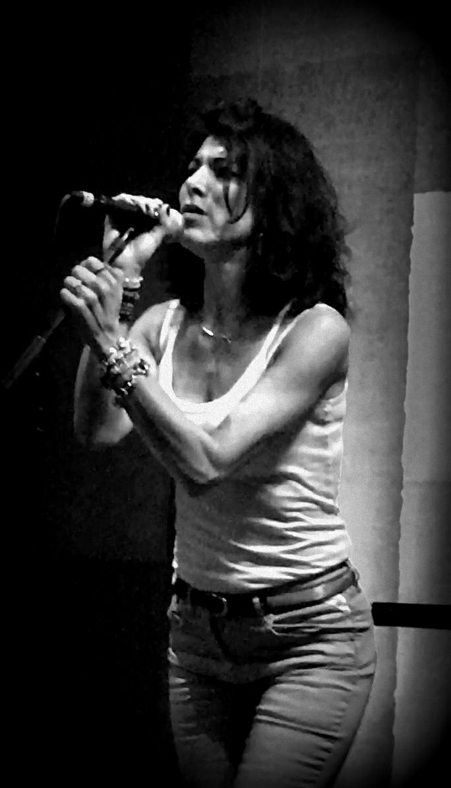

Chanteuse d'Alertes • Auteure-Compositrice • Coach Vocal
De Vénissieux aux scènes internationales, ma voix unit l'art intemporel et l'éveil citoyen. Entre jazz authentique et messages engagés. 18,1K abonnés YouTube, 1,9M vues.
Découvrez Sarah-Jane à travers ses créations et performances

De Amy Winehouse aux grands standards, découvrez mon univers jazz et soul authentique.
Mes "musiques illicites" : parodies engagées et messages citoyens sans filtre.
Pour collaborations, spectacles, coaching vocal ou simplement échanger sur l'art et la musique.